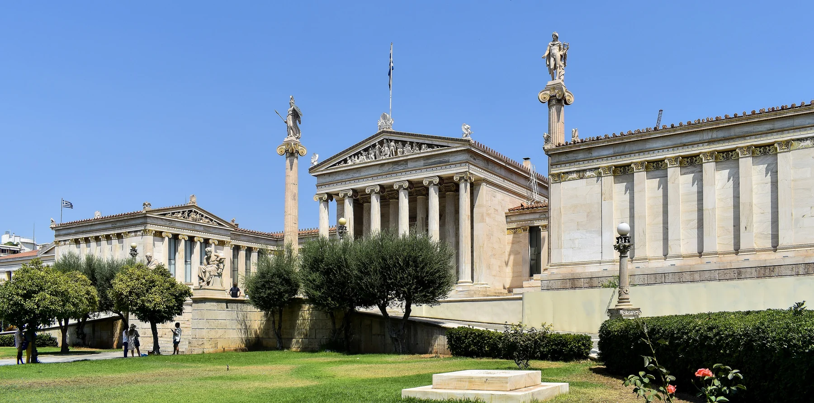

Το γραφείο
ACE Lawyers — Κατσαρός & Παππάς. Δικηγορικό γραφείο στο Κολωνάκι, στην Αθήνα.
Το γραφείο παρέχει συμβουλευτική, γνωμοδοτική και δικαστηριακή υποστήριξη σε υποθέσεις εμπορικού, αστικού, διοικητικού και φαρμακευτικού δικαίου. Το αντικείμενό του αφορά ιδιώτες και επιχειρήσεις.

Αντικείμενο
Οι εταιρικές και εμπορικές υποθέσεις περιλαμβάνουν συμβάσεις, εταιρικές μεταβολές και σύσταση εταιρειών. Στις αστικές υποθέσεις εντάσσονται, μεταξύ άλλων, ακίνητα, οικογενειακά και κληρονομικά ζητήματα. Το γραφείο δραστηριοποιείται επίσης στο δημόσιο και διοικητικό δίκαιο και στο φαρμακευτικό δίκαιο.
Δείτε τους τομείς δικαίου